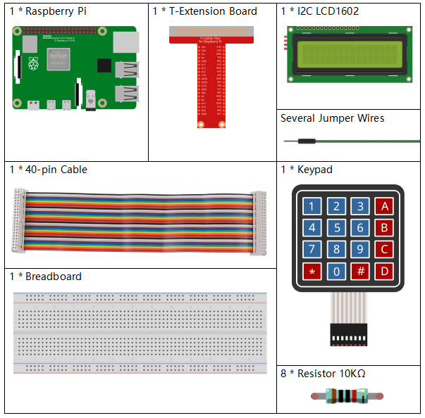

3.1.9 Passwortsperre¶
Einführung¶
In diesem Projekt werden wir eine Tastatur und ein LCD verwenden, um ein Nummerschloss herzustellen. Auf dem LCD wird eine entsprechende Aufforderung angezeigt, Ihr Passwort auf der Tastatur einzugeben. Wenn das Passwort korrekt eingegeben wurde, wird „Richtig“ angezeigt.
Auf der Grundlage dieses Projekts können wir zusätzliche elektronische Komponenten wie Summer, LED usw. hinzufügen, um verschiedene experimentelle Phänomene für die Passworteingabe hinzuzufügen.
Komponenten¶
Schematische Darstellung¶
T-Karte Name |
physisch |
wiringPi |
BCM |
GPIO18 |
Pin 12 |
1 |
18 |
GPIO23 |
Pin 16 |
4 |
23 |
GPIO24 |
Pin 18 |
5 |
24 |
GPIO25 |
Pin 22 |
6 |
25 |
GPIO17 |
Pin 11 |
0 |
17 |
GPIO27 |
Pin 13 |
2 |
27 |
GPIO22 |
Pin 15 |
3 |
22 |
SPIMOSI |
Pin 19 |
12 |
10 |
SDA1 |
Pin 3 |
||
SCL1 |
Pin 5 |

Experimentelle Verfahren¶
Schritt 1: Bauen Sie die Schaltung auf.

Für Benutzer in C-Sprache¶
Schritt 2: Verzeichnis wechseln.
cd /home/pi/davinci-kit-for-raspberry-pi/c/3.1.9/
Schritt 3: Kompilieren.
gcc 3.1.9_PasswordLock.cpp -lwiringPi
Schritt 4: Ausführen.
sudo ./a.out
Nachdem der Kode ausgeführt wurde, wird die Tastatur über die Tastatur eingegeben. Wenn auf dem LCD1602 die Meldung „RICHTIG“ angezeigt wird, ist das Kennwort nicht falsch. Andernfalls wird „FALSCHER SCHLÜSSEL“ angezeigt.
Kode Erklärung
#define ROWS 4
#define COLS 4
#define BUTTON_NUM (ROWS * COLS)
#define LENS 4
unsigned char KEYS[BUTTON_NUM] {
'1','2','3','A',
'4','5','6','B',
'7','8','9','C',
'*','0','#','D'};
char password[LENS]={'1','9','8','4'};
Hier definieren wir die Länge des Kennworts LENS, des Schlüssel-Array-Tastenschlüssel-Arrays KEYS und des Arrays, in dem das richtige Kennwort gespeichert ist.
void keyRead(unsigned char* result);
bool keyCompare(unsigned char* a, unsigned char* b);
void keyCopy(unsigned char* a, unsigned char* b);
void keyPrint(unsigned char* a);
void keyClear(unsigned char* a);
int keyIndexOf(const char value);
Es gibt eine Deklaration der Unterfunktionen des Matrix-Tastaturkode. Weitere Informationen finden Sie in Kapitel 2.1.5 dieses Dokuments.
void write_word(int data);
void send_command(int comm);
void send_data(int data);
void lcdInit();
void clear();
void write(int x, int y, char const data[]);
Es gibt eine Erklärung der Unterfunktionen der LCD1062-Kode. Weitere Informationen finden Sie in Kapitel 1.1.7 dieses Dokuments.
while(1){
keyRead(pressed_keys);
bool comp = keyCompare(pressed_keys, last_key_pressed);
...
testword[keyIndex]=pressed_keys[0];
keyIndex++;
if(keyIndex==LENS){
if(check()==0){
clear();
write(3, 0, "WRONG KEY!");
write(0, 1, "please try again");
}
...
Lesen Sie den Schlüsselwert und speichern Sie ihn im Testarray-Testwort. Wenn die Anzahl der gespeicherten Schlüsselwerte mehr als 4 beträgt, wird die Richtigkeit des Kennworts automatisch überprüft und die Überprüfungsergebnisse werden auf der LCD-Oberfläche angezeigt.
int check(){
for(int i=0;i<LENS;i++){
if(password[i]!=testword[i])
{return 0;}
}
return 1;
}
Überprüfen Sie die Richtigkeit des Passworts. Geben Sie 1 zurück, wenn das Passwort korrekt eingegeben wurde, und 0, wenn nicht.
Für Python-Sprachbenutzer¶
Schritt 2: Verzeichnis wechseln.
cd /home/pi/davinci-kit-for-raspberry-pi/python/
Schritt 3: Ausführen.
sudo python3 3.1.9_PasswordLock.py
Nachdem der Kode ausgeführt wurde, wird über die Tastatur das Kennwort eingegeben: 1984. Wenn auf dem LCD1602 die Meldung „RICHTIG“ angezeigt wird, ist das Kennwort nicht falsch. Andernfalls wird „FALSCHER SCHLÜSSEL“ angezeigt.
Kode Erklärung
LENS = 4
password=['1','9','8','4']
...
rowsPins = [18,23,24,25]
colsPins = [10,22,27,17]
keys = ["1","2","3","A",
"4","5","6","B",
"7","8","9","C",
"*","0","#","D"]
Hier definieren wir die Länge des Passworts LENS, die Array-Tasten, in denen die Matrix-Tastaturtasten gespeichert sind, und das Array-Passwort, in dem das richtige Passwort gespeichert ist.
class Keypad():
def __init__(self, rowsPins, colsPins, keys):
self.rowsPins = rowsPins
self.colsPins = colsPins
self.keys = keys
GPIO.setwarnings(False)
GPIO.setmode(GPIO.BCM)
GPIO.setup(self.rowsPins, GPIO.OUT, initial=GPIO.LOW)
GPIO.setup(self.colsPins, GPIO.IN, pull_up_down=GPIO.PUD_DOWN)
...
Diese Klasse ist der Kode, der die Werte der gedrückten Tasten liest. Weitere Informationen finden Sie in Kapitel 2.1.5 dieses Dokuments.
while(True):
pressed_keys = keypad.read()
if len(pressed_keys) != 0 and last_key_pressed != pressed_keys:
LCD1602.clear()
LCD1602.write(0, 0, "Enter password:")
LCD1602.write(15-keyIndex,1, pressed_keys)
testword[keyIndex]=pressed_keys
keyIndex+=1
...
Lesen Sie den Schlüsselwert und speichern Sie ihn im Testarray-Testwort. Wenn die Anzahl der gespeicherten Schlüsselwerte mehr als 4 beträgt, wird die Richtigkeit des Kennworts automatisch überprüft und die Überprüfungsergebnisse werden auf der LCD-Oberfläche angezeigt.
def check():
for i in range(0,LENS):
if(password[i]!=testword[i]):
return 0
return 1
Überprüfen Sie die Richtigkeit des Passworts. Geben Sie 1 zurück, wenn das Passwort korrekt eingegeben wurde, und 0, wenn nicht.